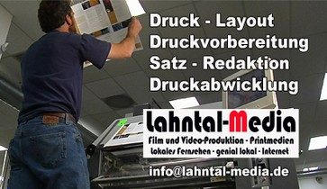
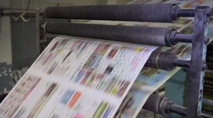
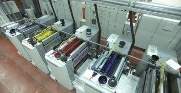
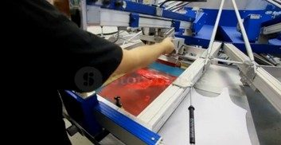
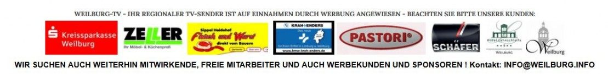

Lahntal-Media
Werben im lokalen Fernsehen
Lahntal Fernsehen (Weilburg-TV) bringt Ihr Unternehmen ins Rampenlicht!
Wir von Lahntal Fernsehen möchten Ihnen heute unsere kreativen Werbelösungen für Ihr Unternehmen vorstellen. In unserer schnelllebigen Zeit sind Videos und Kurzfilme das perfekte Medium, um Ihre Zielgruppe auf unterhaltsame und ansprechende Weise zu erreichen.
Imagefilme: Setzen Sie Ihr Unternehmen gekonnt in Szene! Unsere professionellen Imagefilme vermitteln Ihre Firmenphilosophie und Ihre Stärken auf beeindruckende Weise, sodass Sie sich von der Konkurrenz abheben.
Werbespots: Erreichen Sie Ihre Kunden direkt in deren Wohnzimmer! Mit unseren kreativen Werbespots bringen wir Ihr Unternehmen auf lokalem Fernsehen ins Gespräch. Wir produzieren individuelle Spots, die Ihre Zielgruppe begeistern und Interesse wecken.
Kurzfilme: Erzählen Sie Ihre Geschichte in bewegten Bildern! Unsere Kurzfilme sind kleine Meisterwerke, die Ihr Unternehmen auf unterhaltsame und emotionale Weise präsentieren.
Das Beste dabei? Unser Team von Lahntal Fernsehen ist genial lokal! Wir kennen die Region wie unsere eigene Westentasche und können somit Ihre Botschaft zielgerichtet und authentisch vermitteln. Profitieren Sie von unserer regionalen Expertise und unserer langjährigen Erfahrung in der Film- und Medienproduktion.
Möchten Sie Ihr Unternehmen mit unseren kreativen Videoformaten ins Rampenlicht rücken? Dann zögern Sie nicht, uns zu kontaktieren! Wir freuen uns auf eine erfolgreiche Zusammenarbeit.
Herzliche Grüße,
Ihr Lahntal Fernseh-Team
Willkommen in der Welt der Mediengestaltung und des Drucks!
Wir präsentieren Ihnen eine Rundum-Lösung für all Ihre Kommunikationsbedürfnisse, egal ob Sie ein Gewerbetreibender, ein Verein oder ein Endkunde sind. Unser Portfolio bietet Ihnen eine umfassende Palette an kreativen Dienstleistungen – von der Gestaltung bis zum fertigen Druck.
Unser Team aus erfahrenen Profis ist bestrebt, Ihre Geschichten und Botschaften durch perfekten Satz, ein ansprechendes Layout und eine sorgfältige Redaktion zum Leben zu erwecken. Wir sind stolz darauf, über unseren Printpartner modernste Technologien und hochwertigen Druck für all Ihre Projekte einzusetzen.
Mit uns erhalten Sie alles aus einer Hand: Wir begleiten Sie von der ersten Idee bis zum fertigen Druck und liefern Ihnen beeindruckende Plakate, ansprechende Flyer, informative Zeitungen und hochwertige Bücher. Unser Ziel ist es, Ihnen eine stressfreie und kreative Zusammenarbeit zu bieten, die Ihren Erwartungen entspricht und Ihre Ideen auf Papier oder Bildschirm zum Leben erweckt.
Nutzen Sie unsere Expertise für Ihre Projekte und profitieren Sie von unserer Erfahrung. Wir sind stets daran interessiert, neue Herausforderungen anzunehmen und innovative Lösungen für Ihre Kommunikationsanforderungen zu entwickeln.
Lassen Sie uns gemeinsam kreativ werden und Ihre Visionen Wirklichkeit werden lassen. Vertrauen Sie auf unsere Kompetenzen in den Bereichen Satz, Gestaltung, Layout, Redaktion, Print und Druck, um das Beste aus Ihren Ideen herauszuholen. Mit uns an Ihrer Seite können Sie sicher sein, dass Ihre Projekte das Licht der Welt erblicken – in höchster Qualität und zu Ihrer vollsten Zufriedenheit.
Kontakt




